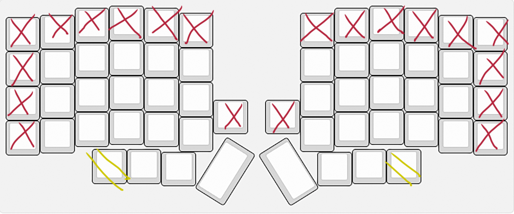

A unique and ergonomic column stagger split keyboard developed to comfortably utilize the entire hand by way of palm and wristrest keys. Also, up to four solenoids because I like loud noises (Not pictured).
Feel free to use this table of contents to skim the sections you're interested in!
| Table of Contents |
|---|
| 00. Abstract |
| 0. Background |
| 1. Objectives |
| 2. Design Process |
| 2.1. Cardboard Aided Design |
| 2.2. Final Design |
| 3.1. My Keymap |
| 4. Discoveries |
| 4b. Plans for future versions |
Using the most scuffed, path-of-least-resistance strategies, I developed a the best keyboard ever. That's right, the best. Until I make the second version, I mean. Following is an overly-detailed explanation of everything I did and why I did it. Don't worry, there's pictures.
I have always been interested in keyboards. When I was six, I meticulously dismantled my mother's non-functioning
Smith Corona SD 300 beyond any possible repair or reassembly. I just wanted to know how it worked!
As I grew up, I eventually learned about mechanical keyboards from the internet. Inevitably, I came across the hobby scene for it and bought a few kits to put together.
The Lily58 became my first ever split keyboard, and I loved it. I eventually moved on to Keeb.io's
Iris and after using it for a few months I decided I wanted to make my own keyboard, one that was perfect for me.
Despite my love for ergonomic keyboards, I had a few problems with them. While I have big hands, my fingers are proportionally rather short. The uppermost of the 4 rows felt like a big waste of space to me; and my pinkies could not reach the second row without moving my whole hand for them, let alone the second row in the outermost columns.

This meant there were twenty-two unusable keys on the Lily, and twenty on the Iris, but only because it was missing two of those unusable keys in the first place.
While I loved the knobs on the Iris, I missed having four thumb keys like on the Lily.
—Except that fourth thumb key on the Lily was somewhat uncomfortable to reach.— There needed to be a different way to lay them out. Though I saw keyboards like the Ergodox had multiple rows of thumb keys, I didn't like the idea. It seemed inelegant. The Kyria seemed to have a good way of handling it that could work if cut down to just four keys, and later it would serve as a starting-off point for my own design.
What's more, I needed some sort of wrist rest to keep my wrists straight due to the height of the keyboards. I had seen some people solve this with weird squishy memory foam things, and others by switching from Cherry MX to Kailh Choc and having no case for the pcb.
I had a different idea, however, that would allow me to offset my hands exactly as much as I needed for key switches, without losing the 4mm travel distance afforded by MX switches.
As I used the aforementioned keyboards, and did research on others (read: lurked r/olkb) and came to learn what I liked and disliked, I started to adopt a few ideas on what should be considered in keyboard designs.
The first tenet of design for this keyboard was that designing with other people in mind is undesirable.
Too often, designing for others ends up meaning designing something and constantly making concessions to options you like less. This is a fallacy, because if you came
to like that design, then it means it's possible for others to learn to like it too. There's assuredly people just like you
who, if you tamed your design, would be missing out.
An exaggerated example of this would be someone who likes columnar staggered split keyboards opting for an orthagonal monoblock layout because they assume such a thing would be at least more appealing to someone who is expecting a keyboard to look a certain way. A less drastic example would be including a useless number row on the assumption that people would find it annoying to use layers to access them. That's not to say my design ended up particularly niche or inaccessible, it fits quite
boringly alongside every other split ergonomic keyboard minus a few quirks.

On the foot, the muscles at end of the metatarsals form a landmark known as the 'ball' of the foot. There is a similar landmark on the hands at the end of the metacarpals that I will refer to as the ball of the hand because I don't know anything about anatomy and have no idea if there is a proper name for it.
If you know what it's called, please tell me.
Equally, I will refer to the landmark at the bottom of the palm containing the carpals as the heel. Thankfully this at least seems to be accepted terminology.
It is my belief that these two landmarks are underutilized when it comes to keyboards, especially when the position of the heel itself is highly important to achieving a straight wrist to avoid pain. With the appropriate layout, these can be used to grant at least four more keys.
dolor
My mommy helped :)
I won't bore you with another sanctimonious over-explanatory rant about the superiority and unassailable holiness of Colemak-DH over QWERTY. I think that's entirely unnecessary. In an incredibly interesting way, QWERTY+horizontal stagger has been self-optimized by the way most people have naturally begun using it. Despite the typewriter skeuomorph being such an unergonomic design, users largely manage to avoid pitfalls of the design it by adapting a typing style that does not respect official textbook typing. Notice how in world record wpm videos typists' hands gravitate to specific areas and do not really rest in the homerow at all. The movement is not in their fingers but rather in their elbows. Am I saying that QWERTY belongs on monoblock keyboards? No, it doesn't really belong anywhere, but it's totally inoffensive. However I do not think QWERTY lends itself at all to any physical layout other than perhaps the typewriter skeuomorph. And then only barely. My issue is when it's used on split keyboards. I won't lie, my heart breaks when I see ergonomic keyboards using QWERTY keymaps. What was the point of all the effort of assembly and design?
amet
consectur
{kind=link}